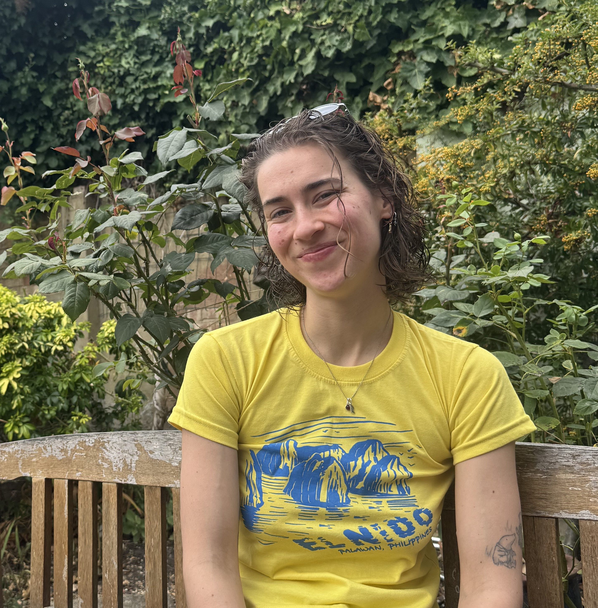

SITE UNDER CONSTRUCTION
My research is broadly focused on evolutionary biology and ecotoxicology. I use a combination of omic, experimental, and field-based methods to understand how and why complex traits evolve across the Tree of Life, and how they are shaped by anthropogenic change.
Photo of a Yellow crested weedfish (Cristiceps aurantiacus) by lizzydem (CC-BY-NC)

Postdoctoral Research Associate · The University of Manchester
I am an early-career researcher interested in understanding the genomic basis of complex phenotypes, and how these phenotypes are impacted by anthropogenic change. I am particularly interested in using omic methods, such as comparative genomics, phylogenetics, and transcriptomics, to better understand the molecular changes associated with convergent traits. Recently, I have expanded my research to explore the impacts of environmental pollution on wildlife, with a particular focus on the impacts of pharmaceutical pollution on reproduction and cognition in fishes.
My work uses a combination of bioinformatics, field work, and laboratory techniques to better understand the evolution of complex phenotypes, and how they are impacted by pollution.
Whole genome data provides us with an exciting opportunity to understand the molecular bais of complex traits. My research aims to use genomic data, in combination with newly evolving computational methods, to uncover the molecular mechanisms associated with complex phenotypes. I am particularly interest in investigating the molecular changes associated with parental care, from mouthbrooding in African cichlids to viviparity in vertebrates.
The increasing human population and gradual rise in life expectancy has seen a concerning rise in environmental pollution. My research largely focuses on pharmaceutical pollutants, an emerging concern of aquatic wildlife, and their impacts on reproduction and cognition. I am particularly passionate about broadening the taxonomic scope of ecotoxicological research to better understand how environmental contaminants interact with diverse phenotypes.